ภาพโปรโมท
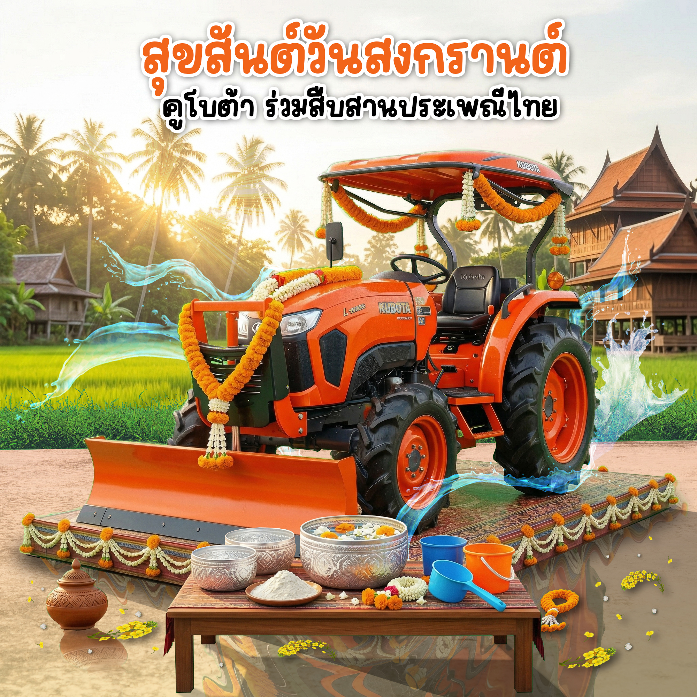
แคมเปญสงกรานต์: นวัตกรรมคู่วัฒนธรรม
1. โทนสี (Color Palette)
- สีหลัก: สีส้ม
- สีรอง: สีเขียวและสีน้ำตาลโทนอุ่น
- สีไฮไลท์: สีฟ้า/น้ำเงิน, สีเหลืองทอง
2. การจัดองค์ประกอบ (Layout)
เน้นความสมดุลและการเล่าเรื่องแบบเป็นลำดับ (Visual Hierarchy) โดยมี จุดโฟกัส คือ รถแทรกเตอร์ถูกวางไว้กึ่งกลางภาพในฐานะ "พระเอก" ของงาน ตกแต่งด้วยพวงมาลัยเพื่อเชื่อมโยงเครื่องจักรเข้ากับประเพณี
สรุปแนวคิด: เป็นการผสมผสานระหว่าง "นวัตกรรม (รถแทรกเตอร์)" กับ "วัฒนธรรม (สงกรานต์)" โดยใช้สีส้มของแบรนด์เป็นตัวเชื่อมโยง มุ่งเน้นไปที่ความรู้สึกมีความสุข ความเป็นสิริมงคล และความผูกพันกับเกษตรกรไทยครับ
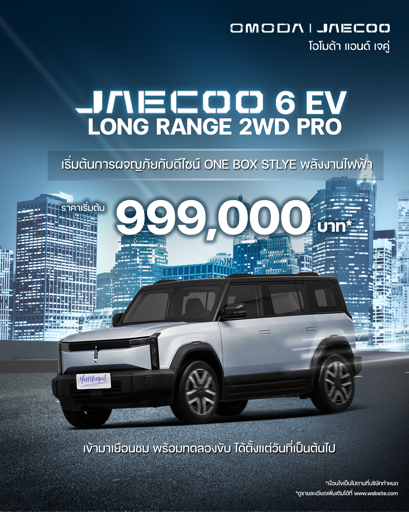
ภาพโปสเตอร์โปรโมท JAECOO 6 EV
1. โทนสี (Color Palette)
- สีหลัก: สีน้ำเงินเข้ม/กรมท่า (Midnight Blue)
- สีรอง: สีขาว (White) และ สีเงิน (Silver)
- สีไฮไลท์: สีฟ้าสว่าง/ไซแอน (Electric Cyan/Light Blue)
2. การจัดองค์ประกอบ (Layout)
การจัดวางเน้นความสมดุลแบบกึ่งกลาง (Symmetrical Balance) เพื่อสร้างความรู้สึกมั่นคงและน่าเชื่อถือ Visual Hierarchy (ลำดับการมอง): 1. Price: ตัวเลข "999,000" มีขนาดใหญ่ที่สุดและอยู่กลางภาพ เพื่อดึงดูดสายตาทันที (Hook) 2. Product: ตัวรถถูกวางในมุมเฉียง (Perspective) เพื่อให้เห็นดีไซน์ "One Box Style" ชัดเจน และมี Motion Blur ที่ล้อสื่อถึงการเคลื่อนที่
สรุปแนวคิด: งานออกแบบนี้ใช้แนวคิด "Modern Tech & Urban Adventure" โดยใช้โทนสีเย็นตัดกับแสงสว่างเพื่อสื่อถึงพลังงานไฟฟ้า และใช้ Layout ที่เน้นตัวเลขราคาและรูปลักษณ์รถที่ชัดเจน เพื่อกระตุ้นการตัดสินใจของผู้บริโภคครับ
ภาพโฆษณา
.jpg)
ภาพโฆษณา Mitsubishi Outlander PHEV
1. โทนสี (Color Palette)
- สีหลัก: สีขาว (White Diamond) สีเขียว (Green)
- สีรอง: สีน้ำเงินเข้ม/ดำ (Deep Navy/Black)
- สีไฮไลท์: สีฟ้าไซแอน (Electric Cyan)
สรุปแนวคิด: Outlander ไม่ใช่แค่รถ SUV ทั่วไป แต่เป็นนวัตกรรมที่อยู่ร่วมกับธรรมชาติได้อย่างหรูหรา เป็นการผสมผสานระหว่าง "ธรรมชาติ" กับ "เทคโนโลยี" ได้อย่างลงตัว
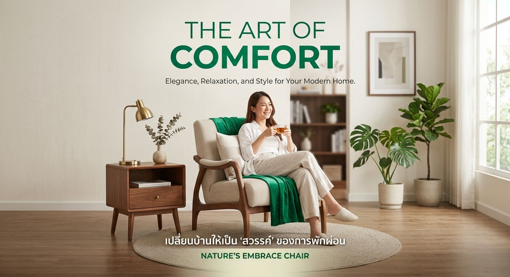
ภาพโฆษณาเก้าอี้ "Nature's Embrace Chair"
1. โทนสี (Color Palette)
- สีหลัก: สีครีม
- สีรอง: สีน้ำตาลไม้
- สีไฮไลท์: สีเขียวมรกต
สรุปแนวคิด: เป็นการนำเสนอแนวคิดการออกแบบที่เน้นความสอดประสานระหว่างมนุษย์ ธรรมชาติ และพื้นที่อยู่อาศัย (Biophilic Design)
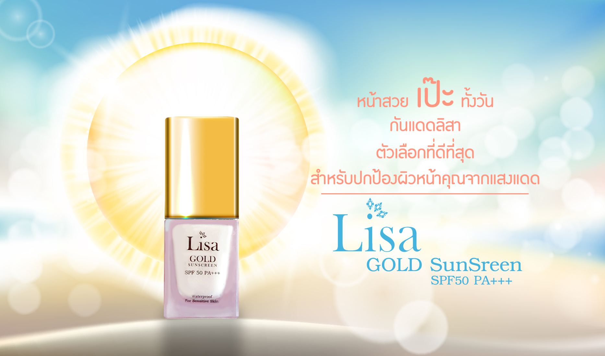
ภาพโฆษณา กันแดด Lisa SunScreen
1. โทนสี (Color Palette)
- สีหลัก: สีฟ้าอ่อน (Sky Blue) และสีขาว (White)
- สีรอง: สีทอง (Gold) และสีเหลือง (Yellow)
- สีไฮไลท์: สีส้มอมชมพู (Coral/Salmon) และสีฟ้าเข้ม (Teal)
สรุปแนวคิด: การเลือกใช้สีกลุ่มนี้เป็นการผสมผสานระหว่าง ความรู้สึกปกป้อง (ฟ้า/ขาว) และ ความงามระดับพรีเมียม (ทอง/ชมพู) ได้อย่างลงตัวครับ ยิ่งช่วยส่งเสริมให้ตัวขวดสินค้าดูโดดเด่นออกมาจากพื้นหลังได้ดีมากครับ
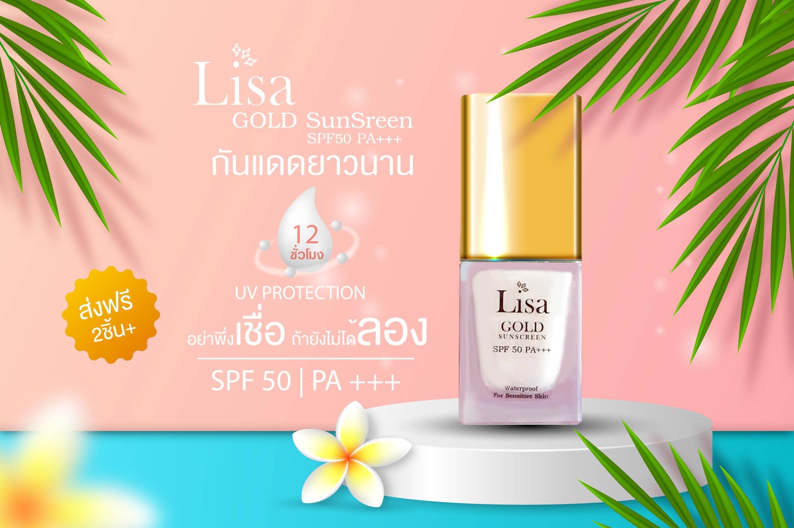
ภาพโฆษณา กันแดด Lisa SunScreen
1. โทนสี (Color Palette)
- สีหลัก: สีชมพูพาสเทล / สีพีช
- สีรอง: สีฟ้า
- สีไฮไลท์: สีทอง และ สีเหลืองส้ม
สรุปแนวคิด: การใช้สีในงานชิ้นนี้เลือกใช้ Palette ที่ให้ความรู้สึก "Tropical Summer" โดยมีสีเขียวของใบไม้มาช่วยตัดทอนความหวานของสีชมพู ทำให้งานดูสดชื่นและมีชีวิตชีวามากขึ้นครับ
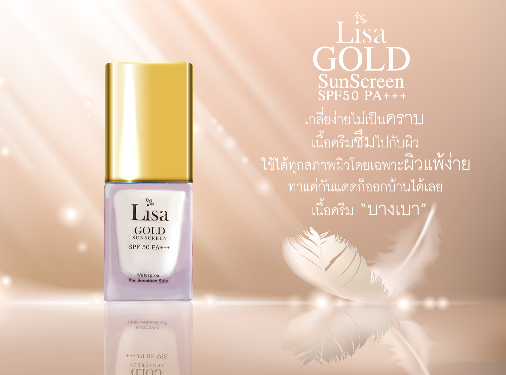
ภาพโฆษณา กันแดด Lisa SunScreen
1. โทนสี (Color Palette)
- สีหลัก: สีแชมเปญโกลด์ / โรสโกลด์
- สีรอง: สีขาว
- สีไฮไลท์: สีทองสว่าง
สรุปแนวคิด: งานชิ้นนี้ใช้เทคนิคการออกแบบสีแบบ Monochromatic (การใช้สีในโทนเดียวกันแต่ต่างความเข้มสว่าง) เป็นหลัก ซึ่งช่วยสร้างความรู้สึกกลมกลืน ดูแพง และเน้นไปที่เนื้อสัมผัสของแสง (Lighting) ที่ตกกระทบเพื่อให้ดูมีมิติเหมือนงานโฆษณาในเคาน์เตอร์แบรนด์ครับ
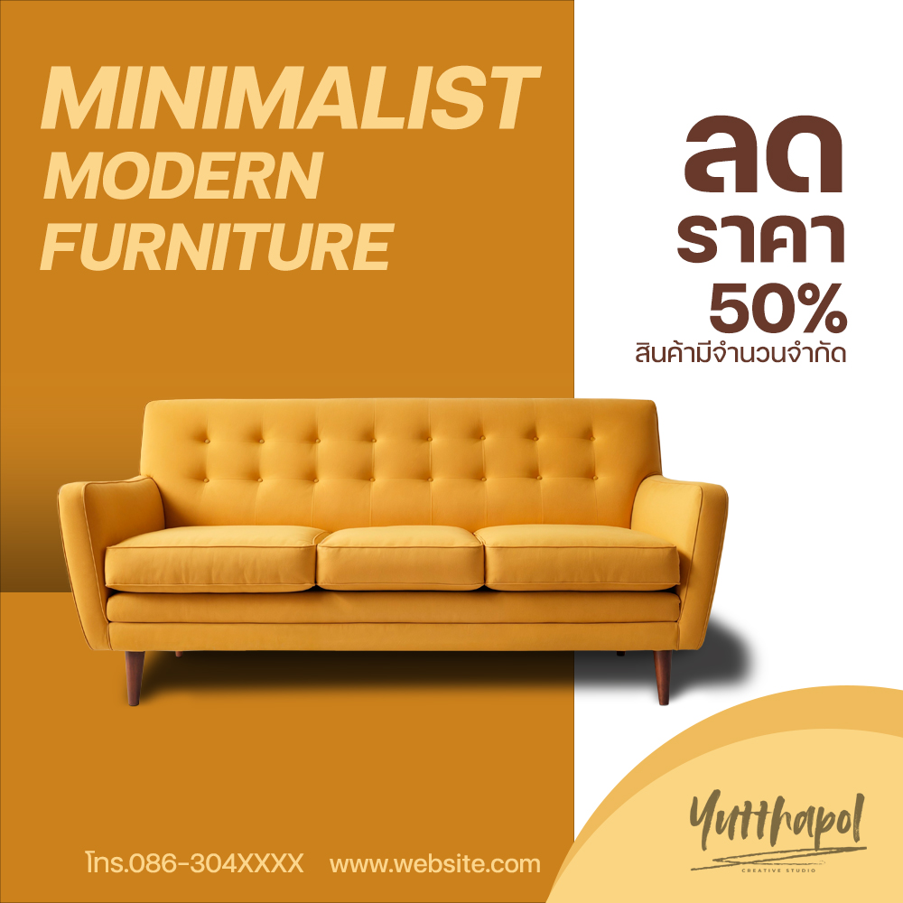
ภาพโฆษณาเฟอร์นิเจอร์ Minimalist Modern Furniture
1. โทนสี (Color Palette)
- สีหลัก: สีเหลืองมัสตาร์ด / สีโอเคอร์
- สีรอง: สีขาว สีไฮไลท์: สีน้ำตาลเข้ม
สรุปแนวคิด: การออกแบบนี้ใช้คู่สีโทน Analogous (สีใกล้เคียงกัน) ในฝั่งสีอุ่น แล้วตัดด้วยสีขาวเพื่อความโมเดิร์น เป็นการใช้สีที่สร้างความรู้สึก "Minimalist" แต่ยังคงความ "Modern" ไว้ได้อย่างลงตัวผ่านความเข้มอ่อนของโทนสีเหลือง-น้ำตาลครับ
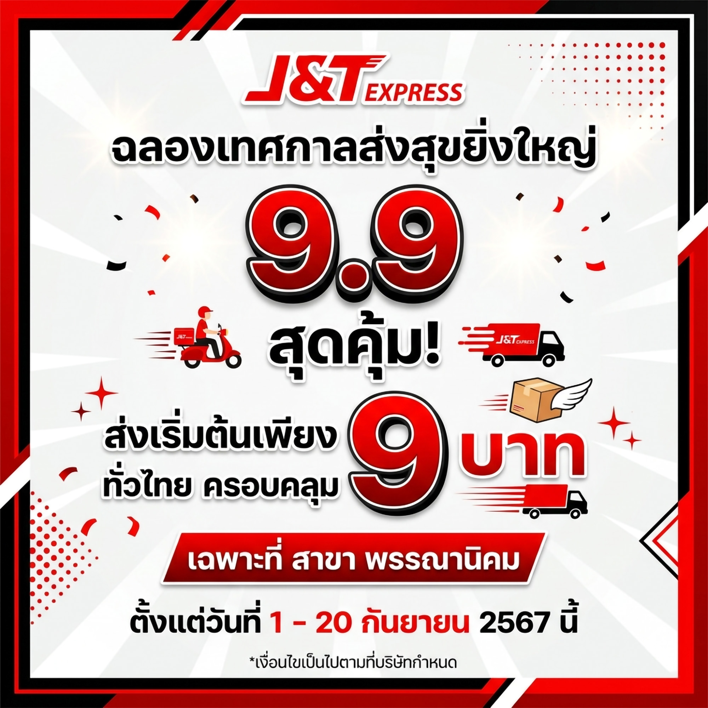
สื่อโฆษณาของ J&T Express 9.9
1. โทนสี (Color Palette)
- สีหลัก:สีแดง (Red)
- สีรอง: สีขาว (White) และ สีดำ (Black)
- สีไฮไลท์: สีแดงไล่เฉด และ สีแดงสว่าง
สรุปแนวคิด: แนวคิดการเลือกใช้สีถูกออกแบบมาเพื่อเน้นอัตลักษณ์ของแบรนด์ (Brand Identity) และการกระตุ้นความสนใจ (Call to Action) การใช้คู่สี แดง-ขาว-ดำ เป็นการใช้สีที่มี Contrast สูงมาก ทำให้สื่อดูมีพลัง (Dynamic) เหมาะกับธุรกิจขนส่งและช่วงเทศกาลลดราคาที่ต้องการความตื่นเต้น
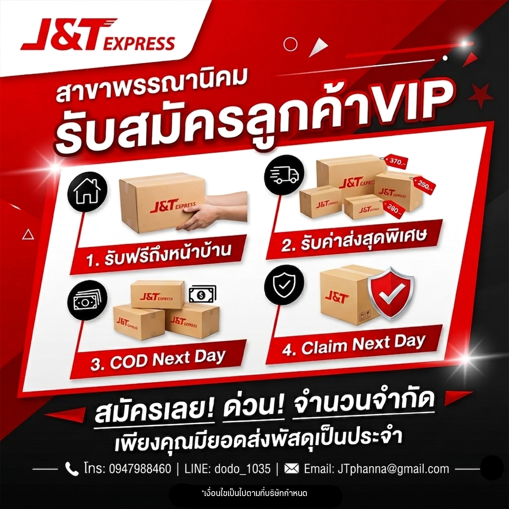
สื่อโฆษณาของ J&T Express ชวนสมัครVIP
1. โทนสี (Color Palette)
- สีหลัก:สีแดง และ สีดำ
- สีรอง: สีขาว
สรุปแนวคิด: มีการปรับเปลี่ยนการวางองค์ประกอบให้ดูเป็น Infographic มากขึ้น โดยยังคงรักษาอัตลักษณ์ของแบรนด์ไว้อย่างเหนียวแน่น
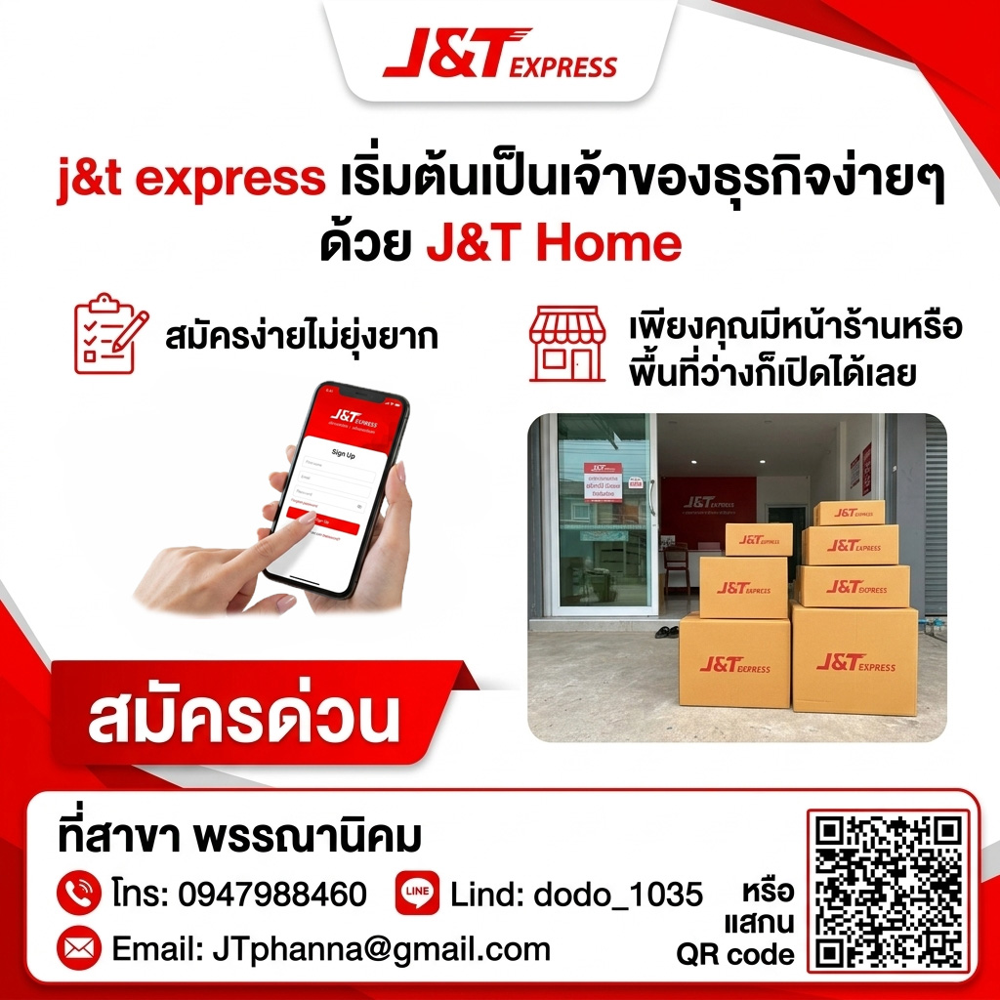
สื่อโฆษณาของ J&T Express ชวนมาเป็นพาร์ทเนอร์ธุรกิจ J&T Home
1. โทนสี (Color Palette)
- สีหลัก:สีขาว (White)
- สีรอง: สีแดง (Red)
- สีไฮไลท์: สีดำ (Black)
สรุปแนวคิด: จะเน้นความ "สะอาดตาและเข้าถึงง่าย" (Simplicity & Accessibility) เนื่องจากเนื้อหาเป็นการชวนมาเป็นพาร์ทเนอร์ธุรกิจ J&T Home จึงต้องสร้างความรู้สึกว่า "ใครๆ ก็ทำได้"
ภาพโบรชัวร์

ภาพโบรชัวร์ชิ้นนี้ ทำใน Illustrator เน้นการสื่อสารข้อมูลที่ชัดเจนและจดจำแบรนด์ได้ทันที
มุมมองเพิ่มเติม: การเลือกใช้ทรง Organic Shape (รูปทรงอิสระ/คลื่น) สีแดงด้านล่างใน Illustrator ช่วยลดความแข็งกระด้างของงานที่เป็นข้อมูลเยอะๆ ได้ดีมากครับ
ภาพประกาศ
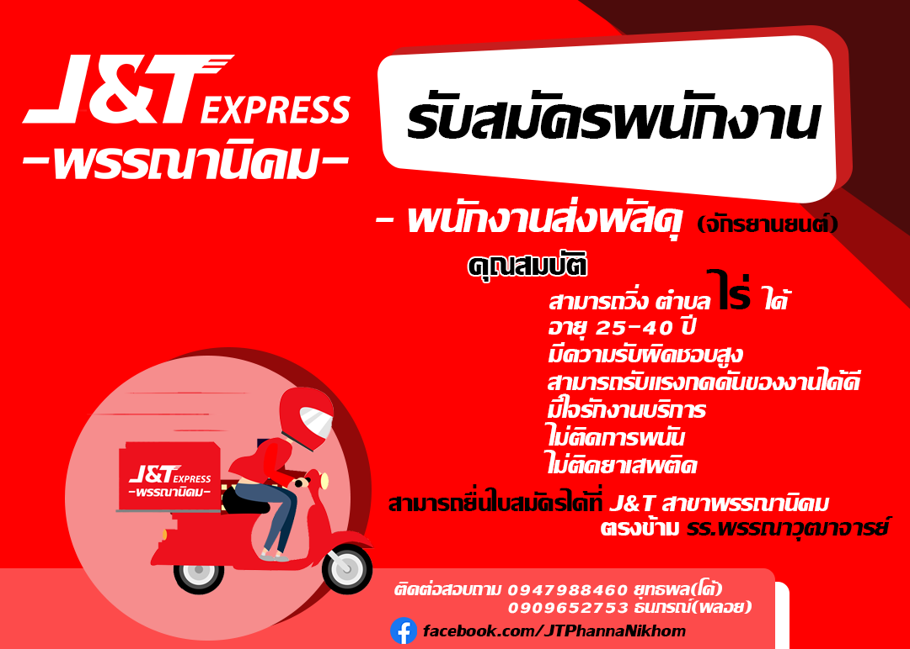
ออกแบบภาพประกาศรับสมัครงาน
ดีไซน์ที่ดูเป็นมืออาชีพ มีความน่าเชื่อถือ จัดลำดับความสำคัญของข้อความ (คุณสมบัติ, ตำแหน่ง, ช่องทางการติดต่อ) ให้ผู้สนใจอ่านจับใจความได้รวดเร็ว
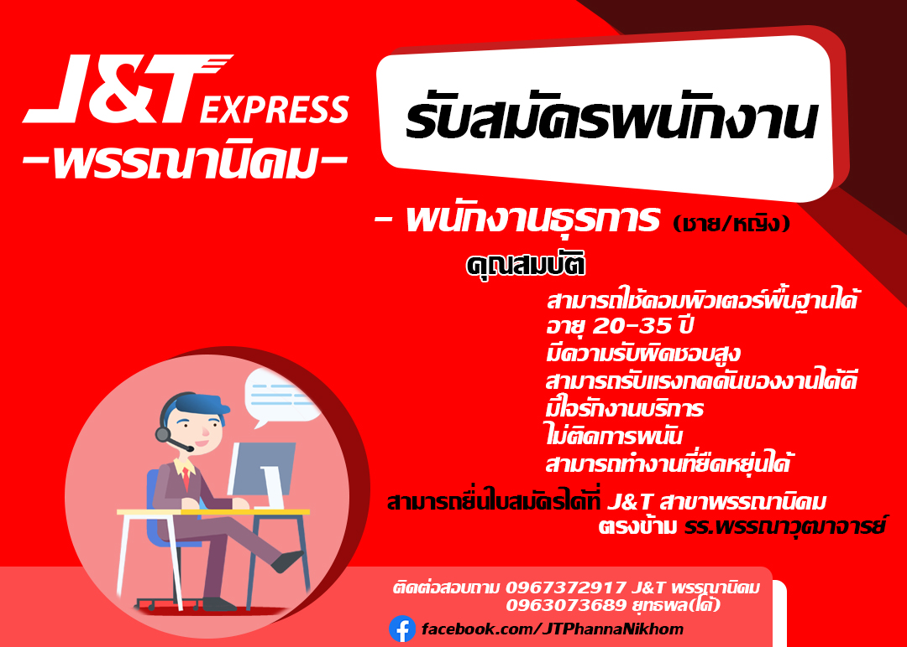
ออกแบบภาพประกาศรับสมัครงาน
ดีไซน์ที่ดูเป็นมืออาชีพ มีความน่าเชื่อถือ จัดลำดับความสำคัญของข้อความ (คุณสมบัติ, ตำแหน่ง, ช่องทางการติดต่อ) ให้ผู้สนใจอ่านจับใจความได้รวดเร็ว
ออกแบบโลโก้
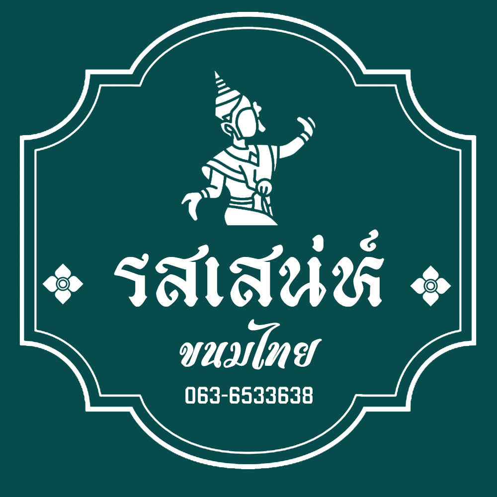
โลโก้ "รสเสน่ห์ ขนมไทย"
งานออกแบบมาในสไตล์ Thai Vintage / Classic Boutique ที่ให้ความรู้สึกหรูหราและร่วมสมัยไปพร้อมกัน

Corporate Identity Design
ออกแบบตราสัญลักษณ์ที่สะท้อนถึงวิสัยทัศน์และตัวตนของแบรนด์ เน้นความเรียบง่าย (Minimalist) แต่เป็นที่จดจำได้ง่าย (Memorable) นำไปปรับใช้ได้กับทุกสื่อสิ่งพิมพ์และดิจิทัล
สื่อมีเดีย
วิดีโอพรีเซนเทชัน / โฆษณาสั้น / รีวิว / ด้วยโปรแกรม Premiere Pro
รายละเอียดงาน:
- ตัดต่อวิดีโอสำหรับลง Social Media (Reels/TikTok)
- ใส่ Motion Graphic ข้อความประกอบและ Subtitle
- ตัดต่อด้วยโปรแกรม Premiere Pro
วิดีโอเน้นจังหวะกระชับ ดึงดูดความสนใจผู้ชมภายใน 3 วินาทีแรก
วิดีโอ คลิป3D สั้น/ด้วยโปรแกรม Capcut และ AI
รายละเอียดงาน:
- สร้างด้วย AI
- ตัดต่อวิดีโอสำหรับลง Social Media (Reels/TikTok)
- ตัดต่อด้วยโปรแกรม Capcut
วิดีโอเน้นจังหวะกระชับ ดึงดูดความสนใจผู้ชมภายใน 3 วินาทีแรก
วิดีโอ คลิป3D สั้น/ด้วยโปรแกรม Capcut และ AI
รายละเอียดงาน:
- สร้างด้วย AI
- ตัดต่อวิดีโอสำหรับลง Social Media (Reels/TikTok)
- ตัดต่อด้วยโปรแกรม Capcut